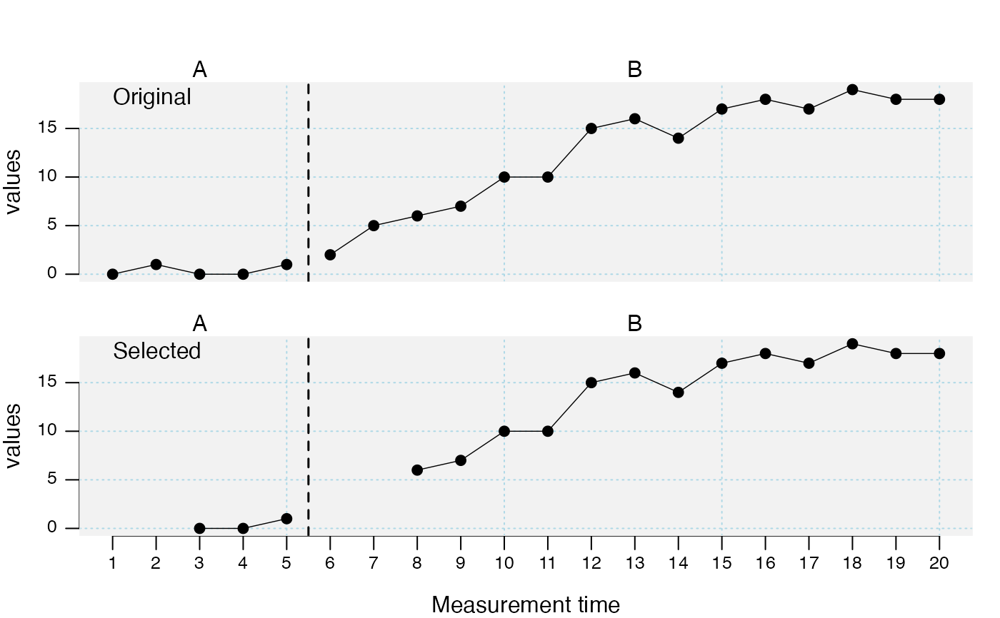

#' This function is superseded by the more versatile
transform.scdf function.
This function truncates data points at the beginning and / or end of each
phase in each case.
Arguments
- data
A single-case data frame. See
scdf()to learn about this format.- dvar
Character string with the name of the dependent variable. Defaults to the attributes in the scdf file.
- pvar
Character string with the name of the phase variable. Defaults to the attributes in the scdf file.
- truncate
A list with a vector of two (beginning and end) values for each phase defining the number of data points to be deleted. For lists of single-case data frames, the truncation is adapted to the length of each phase for each single case.
- na
If FALSE, the truncated measurement times are deleted. If TRUE, NAs are set for the dependent variable.
See also
Other data manipulation functions:
add_l2(),
as.data.frame.scdf(),
as_scdf(),
fill_missing(),
moving_median(),
outlier(),
ranks(),
rescale(),
scdf(),
select_cases(),
set_vars(),
shift(),
smooth_cases(),
standardize()
Examples
## Truncate the first two data points of both phases and compare the two
## data sets
study <- c(
"Original" = byHeart2011[1],
"Selected" = truncate_phase(
byHeart2011[1], truncate = list(A = c(2, 0), B = c(2, 0))
)
)
#> Deletet measurements per case:
#>
#> Lisa (Turkish): 1 2 6 7
plot(study)
#> Warning: This function is deprecated. It might be dropped without any further notice in a future update of scan.
#> Please use function 'scplot' from the package 'scplot' instead of 'plot'.
#> Warning: This function is deprecated. It might be dropped without any further notice in a future update of scan.
#> Please use function 'scplot' from the package 'scplot' instead of 'style_plot'.
